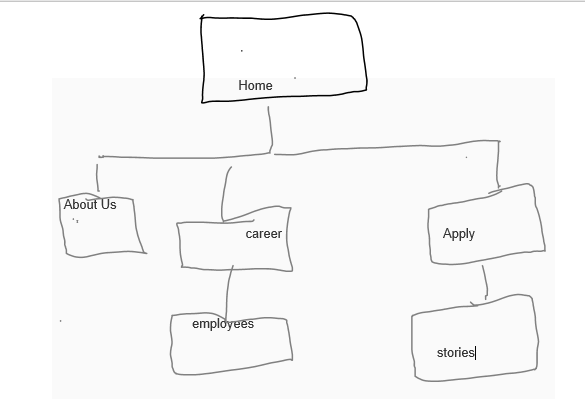

Over view
Our organization and training Programs was born out of the desire to help people living with disabilities experience life to the fullest and get a jump start on the path to independence.
As this organization grows, we wanted to continue to be mentors to this population. The most effective way to make his organization accessible to our targeted population is through a multimedia website, hence the creation of this website.
Our goal as an organization is to help people with special needs reach their highest potential of independence with the list possible cost to them.
We are taking advantage of all means to do so through technology. We are creating pop advertisement making are search on top of the list with google and all other search engines.
Content
On this website, we will start with an about us page which will include our mission and vision statement and Our programs page which showcase the in-person afterschool program for students with special needs.
The website will also have employee’s and career page which will contain would contain a description of the program, the introduction of each instructor and their contact information.
We will also have our story page which will include video of success stories with students who went through the program, and also videos and descriptions of the work, testimonials from parents/guardians/students about the program and our community.
We will also have an application page which will offer a form for students to apply for the afterschool program and schedule of any activities (such as fares or anything that is public knowledge and not dangerous for kids to advertise).

Marketing
We are taking advantage of all means to do so through technology. We are creating pop advertisement making are search on top of the list with google and all other search engines
We have come to understand that a webpage without traffic offers no business purpose so we have prioritized this in our business plan we have chosen to incorporate new applications of old-fashioned marketing, including advertising, public relations, and word of mouth.
We will also generate traffic through new Internet marketing, highlighted by careful management of searcher strategies. Our competitive edge is that most of our competitors are not web based.
In dealing with intellectual property we have prioritize that if we will be using E-Commerce system, or search engine or other technical Internet tools licensed to you by another company, to make sure that we check the terms in the license agreement to see who owns the system.
We have also determined to get a written agreement which will be supervised through our company lawyer before working on our website. The written permission to use photos, video, music, or software that belongs to another organization will be properly vetted to ensure that it does not violate any copyright laws, because we understand that because these materials were retrieved from the Internet does not mean that it is in the public domain.
You may have to pay for permission to use these materials. In many countries, you will need to communicate with a collecting society or association our lawyer has been authorized to make sure that, if your country’s law) requires it, that you have permission to show trademarks owned by other companies that you refer to on your web site and that you recognize them.
We are taking advantage of all means to do so through technology. We are creating pop advertisement making are search on top of the list with google and all other search engines
We have come to understand that a webpage without traffic offers no business purpose so we have prioritized this in our business plan we have chosen to incorporate new applications of old-fashioned marketing, including advertising, public relations, and word of mouth.
Competitors and Intellectual property
We will also generate traffic through new Internet marketing, highlighted by careful management of searcher strategies. Our competitive edge is that most of our competitors are not web based.
In dealing with intellectual property we have prioritize that if we will be using E-Commerce system, or search engine or other technical Internet tools licensed to you by another company, to make sure that we check the terms in the license agreement to see who owns the system.
We have also determined to get a written agreement which will be supervised through our company lawyer before working on our website. The written permission to use photos, video, music, or software that belongs to another organization will be properly vetted to ensure that it does not violate any copyright laws, because we understand that because these materials were retrieved from the Internet does not mean that it is in the public domain.
You may have to pay for permission to use these materials. In many countries, you will need to communicate with a collecting society or association our lawyer has been authorized to make sure that, if your country’s law) requires it, that you have permission to show trademarks owned by other companies that you refer to on your web site and that you recognize them.